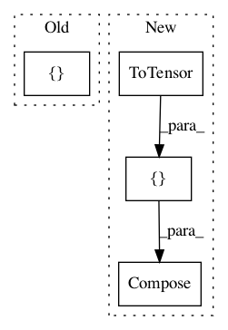

7dd73c6f95d6137a713105c875dde4a5b71844df,examples/classification.py,MNISTInputLoader,__init__,#MNISTInputLoader#Any#,16
Before Change
from tensorflow.examples.tutorials.mnist import input_data
self.mnist = input_data.read_data_sets("MNIST_data", one_hot=True)
self.x = tf.placeholder(tf.float32, shape=[batch_size, 28, 28, 1])
self.feed_y = tf.placeholder(tf.float32, shape=[batch_size, 10])
self.y = ((2*self.feed_y)-1)
After Change
train_loader = torch.utils.data.DataLoader(
datasets.MNIST(dataset_folder, train=True, download=True,
transform=transforms.Compose([
transforms.ToTensor()
])),
batch_size=args.batch_size, shuffle=True, **kwargs)
test_loader = torch.utils.data.DataLoader(
In pattern: SUPERPATTERN
Frequency: 3
Non-data size: 4
Instances
Project Name: HyperGAN/HyperGAN
Commit Name: 7dd73c6f95d6137a713105c875dde4a5b71844df
Time: 2020-07-10
Author: mikkel@255bits.com
File Name: examples/classification.py
Class Name: MNISTInputLoader
Method Name: __init__
Project Name: Microsoft/nni
Commit Name: 445e7e0b74495326ef6f90f238d16513a437d797
Time: 2021-02-14
Author: Yuge.Zhang@microsoft.com
File Name: test/retiarii_test/mnasnet/test.py
Class Name:
Method Name:
Project Name: KaiyangZhou/deep-person-reid
Commit Name: bac2ce56624fdee04f3e45f5af2b41f13e17adbf
Time: 2019-02-03
Author: k.zhou@qmul.ac.uk
File Name: torchreid/transforms.py
Class Name:
Method Name: build_transforms